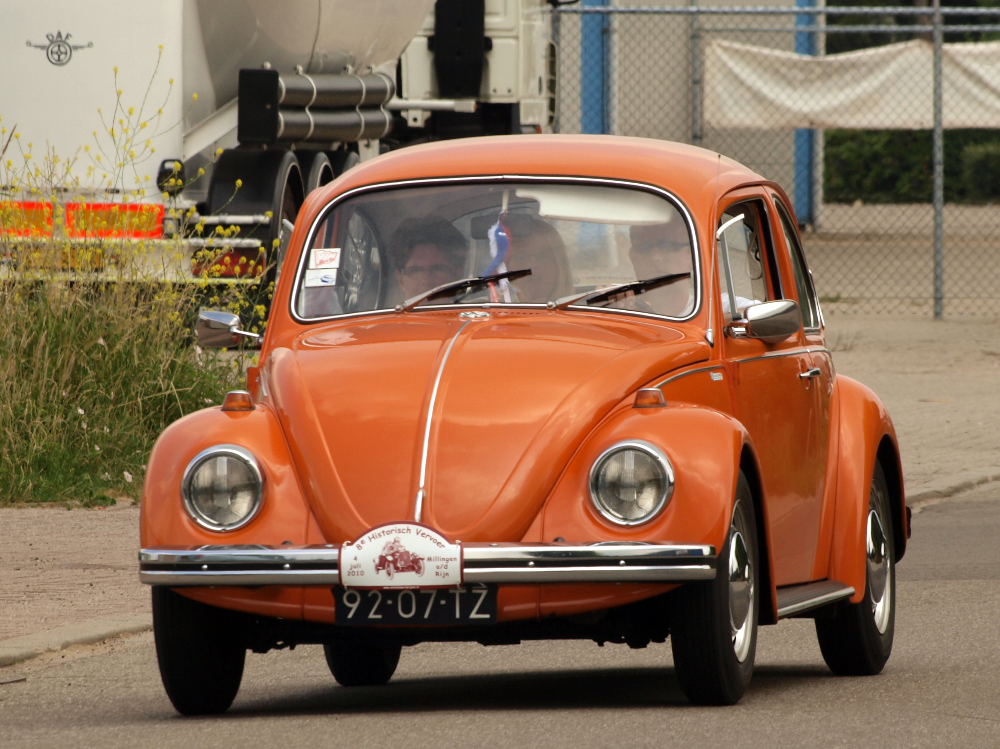
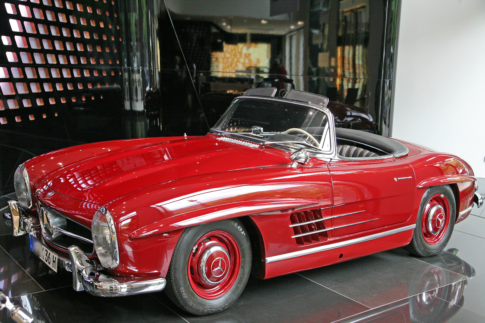
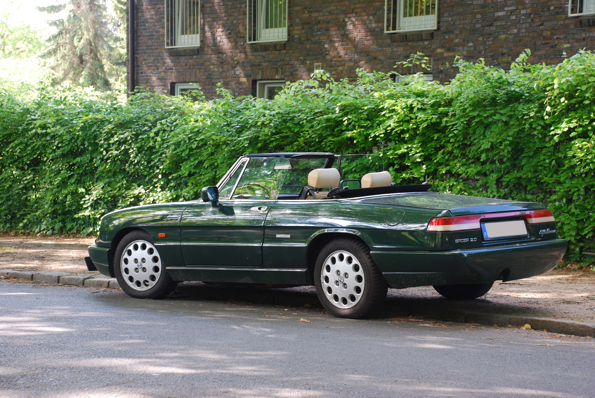

Ford Mustang 1967
Amerikan otomobil tarihinin ikonik modeli.
Otomobil dünyasına hoş geldin!
Klasik otomobiller; geçmişin tasarım anlayışını, otomobil tarihini ve zamansız modelleri günümüze taşıyan özel araçlardır.

Otomobil tarihinin en tanınan klasik modellerinden biri.
Amerikan otomobil tarihinin ikonik modeli.

Martı kanat kapılarıyla tanınan efsanevi otomobil.

İtalyan tasarımının zamansız klasiklerinden biri.